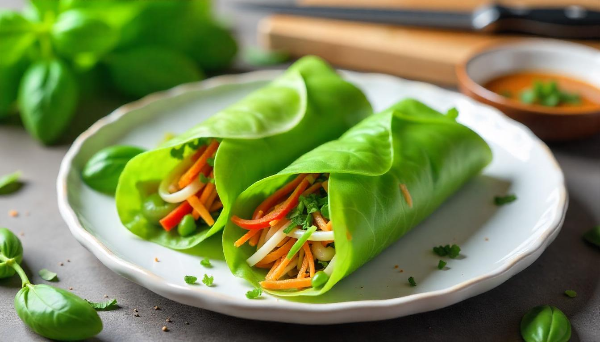

Kulit Lumpia Daun Kemangi

Daun Kemangi
Kemangi adalah terna kecil yang daunnya biasa dimakan sebagai lalap. Aroma daunnya khas, kuat namun lembut dengan sentuhan aroma limau. Daun kemangi merupakan salah satu bumbu bagi pepes. Sebagai lalapan, daun kemangi biasanya dimakan bersama-sama daun kubis, irisan ketimun, dan sambal untuk menemani ayam atau ikan goreng.
Manfaat daun kemangi
Dalam 100 gram daun kemangi terkandung 23 kalori dan beberapa nutrisi yang dibutuhkan oleh tubuh, di antaranya: 3 gram protein, 177 miligram kalsium, 295 miligram kalium, 64 miligram magnesium, 18 miligram vitamin C, 3 miligram zat besi.
Selain itu, daun kemangi juga bisa untuk:
- Mengatasi jerawat
- Menjaga kesehatan sistem pencernaan
- Mempercepat penyembuhan luka dan mencegah infeksi
- Menurunkan stres dan kecemasan
- Mencegah kanker/li>
Alat dan bahan yang dibutuhan
| Alat |
Bahan |
| Kompor |
Daun kemangi |
| Wajan anti lengket |
Penyedap rada |
| Blender/cooper |
Telur |
| Spatula |
Garam |
| Mangkuk dan piring |
Cara Membuat Kulit Lumpia Daun Kemangi
- Pilih daun kemangi yang segar dan berkualitas baik, lalu pilah daun kemangi.
-
Cuci daun kemangi yang telah dipilih menggunakan air mengalir untuk menghilangkan kotoran dan pestisida.
-
Setelah dicuci, blender daun kemangi yang telah dipilah hingga halus untuk mendapatkan ekstrak kemangi.
-
Campurkan daun kemangi yang telah diblender dengan telur, garam, dan bahan penyedap rasa lainnya hingga adonan tercampur rata.
- Panaskan wajan anti lengket dengan api kecil.
- Tuangkan adonan sedikit demi sedikit untuk membuat kulit lumpia tipis dan merata.
- Masak hingga kulit lumpia matang dan berwarna kecokelatan.
- Angkat dan diamkan agar kulit lumpia tidak lengket.
- Setelah kulit lumpia berbahan dasar kemangi siap, produk dapat digunakan.